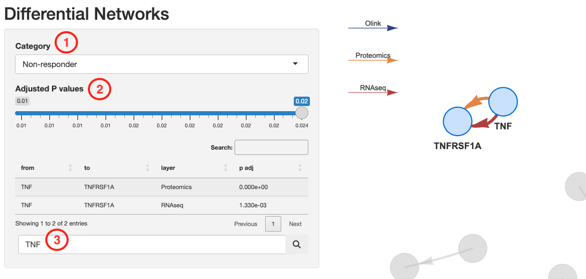
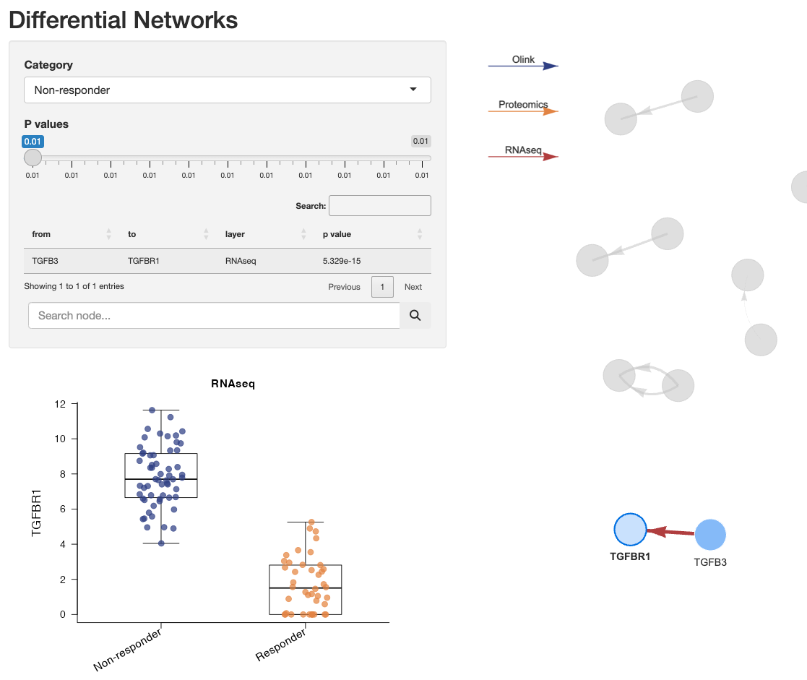
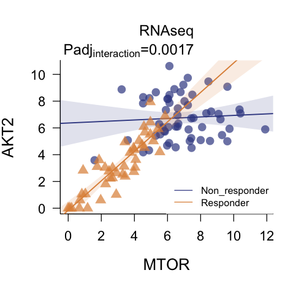
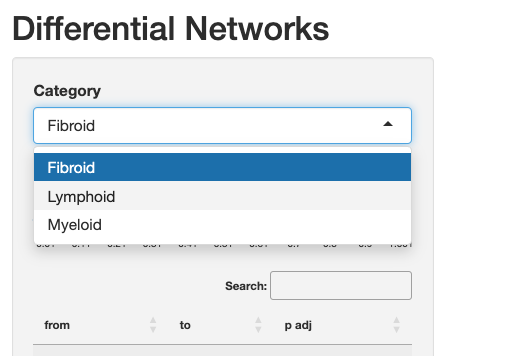
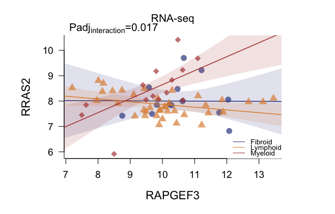
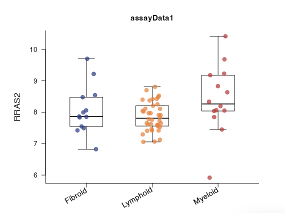

Differential Network Analysis with multiDEGGs
Elisabetta Sciacca, Myles Lewis
Source:vignettes/Differential_Network_Analisis.Rmd
Differential_Network_Analisis.RmdIntroduction
The multiDEGGs package performs multi-omic differential network analysis by identifying differential interactions between molecular entities (genes, proteins, miRNAs, or other biomolecules) across the omic datasets provided.
For each omic dataset, a differential network is constructed, where links represent statistically significant differential interactions between entities. These networks are then integrated into a comprehensive visualization using distinct colors to distinguish interactions from different omic layers. This unified visualization allows interactive exploration of cross-omic patterns (e.g., differential interactions present at both transcript and protein level). For each link, users can access differential statistical significance metrics (p-values or adjusted p-values, calculated via robust or traditional linear regression with interaction term), and differential regression plots.
Beyond network visualization and exploration, multiDEGGs extends its
utility into predictive modeling applications. The identified
differential interactions can be leveraged as engineered features in
machine learning pipelines, providing biologically meaningful predictors
that capture relational information between molecular entities. The
package includes specialized functions for nested cross-validation that
ensure proper feature selection and engineering without data leakage,
enabling the construction of robust and interpretable predictive models
(see
vignette("2. Feature Selection", package = "multiDEGGs")
for details).
Installation
Install from CRAN:install.packages("multiDEGGs")
Install from Github:devtools::install_github("elisabettasciacca/multiDEGGs")
Quick start - Generate Differential Networks
If you are working with human data, you can start differential
analysis by using the internal multiDEGGs’ default reference
network.
Users working with other species or requiring custom interaction sets
can provide their own biological reference netowork as detailed in the
last paragraph of this vignette.
Let’s start by loading the package and sample data:
library(multiDEGGs)
data("synthetic_metadata")
data("synthetic_rnaseqData")
data("synthetic_proteomicData")
data("synthetic_OlinkData")Generate Differential Networks:
assayData_list <- list("RNAseq" = synthetic_rnaseqData,
"Proteomics" = synthetic_proteomicData,
"Olink" = synthetic_OlinkData)
deggs_object <- get_diffNetworks(assayData = assayData_list,
metadata = synthetic_metadata,
category_variable = "response",
regression_method = "lm",
padj_method = "bonferroni",
verbose = FALSE,
show_progressBar = FALSE,
cores = 2)Key Parameters of get_diffNetworks
It’s worth explaining some of the important parameters of
get_diffNetworks:
assayData: accepts either a single normalized matrix/data frame (for single omic differential analysis), or a list of matrices/data frames (for multi-omic scenarios). For multi-omic analysis, it’s highly recommended to use a named list of data. If unnamed, sequential names (assayData1, assayData2, etc.) will be assigned to identify each matrix or data frame.metadata: can also be a named factor vector, with names matching the patient IDs in column names of the assay data matrices/data frames. In that case, the category_variable can remain unset (NULL by default).category_subset: this parameter can restrict the analysis to a certain subset of categories available in the metadata/category vector.regression_method: set to"lm"by default because it is faster and highly recommended in machine learning scenarios, where the function might be repeatedly called many times. For basic differential analyses,"rlm"can also be used and may perform better in some cases.percentile_vector: by default, molecular targets (genes, proteins, etc.) whose expression level is below the 35th percentile of the entire data matrix are excluded from the analysis. This threshold can be modified by specifying the percentile vector that is internally used for the percolation analysis. For example, to remove only targets below the 25th percentile, setpercentile_vector = seq(0.25, 0.98, by = 0.05).padj_method: the default method is Bonferroni. Storey’s q values often give more generous results but theqvaluepackage needs to be installed first.
NOTE: Not all patient IDs need to be present across datasets. Different numbers of samples per omic are acceptable. Only IDs whose data is available in the colnames of the assayData will be included in the analysis. Missing IDs will be listed in a message similar to:
The following samples IDs are missing in Proteomics: PT001, PT005, PT0030
Visualization
The deggs_object now contains the differential networks
for each omic data in assayData_list. These networks can be
integrated into a comprehensive visualization where different colors
distinguish links from different omic layers.
View_diffNetworks(deggs_object)This visualization interface allows to:
- Navigate the networks associated with each patient category
- Filter by link significance
- Search for specific genes inside the network

Thicker links correspond to higher significant p-values.
The direction of the arrows shows the relationship direction reported in
literature, not derived from the data.
The user can visualize differential regression plots by clicking on a link:

This visual inspection of individual links is
essential before drawing any biological conclusions. These
regression plots allow assessment of:
- Effect size: the magnitude of the difference in interaction strength between groups
- Model fit quality: how well the regression lines represent the data
- Noise levels: the scatter and confidence intervals around the regression lines
- Outliers: presence of influential data points that might drive the observed difference
Single node differential expressions can also be visualized by
clicking on the nodes:

NOTE: For multi-omic scenarios, the data from the
first matrix in the list passed to assayData will be used
for this boxplot.
List All Differential Interactions
Outside of the interactive environment, the
get_multiOmics_diffNetworks() function can be used to get a
table of all differential interactions, ordered by p-value or adjusted
p-value:
get_multiOmics_diffNetworks(deggs_object, sig_threshold = 0.05)
#> $Non_responder
#> from to p.value p.adj layer
#> TNF-TNFRSF1A TNF TNFRSF1A 3.325023e-04 1.330009e-03 RNAseq
#> IL1B-IL1R2 IL1B IL1R2 5.389195e-04 2.155678e-03 RNAseq
#> TGFB3-TGFBR1 TGFB3 TGFBR1 5.329071e-15 2.131628e-14 RNAseq
#> AKT2-MTOR AKT2 MTOR 4.347083e-04 1.738833e-03 RNAseq
#> FANCD2-FAN1 FANCD2 FAN1 4.440892e-16 3.552714e-15 Proteomics
#> GNG12-RASA2 GNG12 RASA2 0.000000e+00 0.000000e+00 Proteomics
#> RASGRP3-RRAS RASGRP3 RRAS 2.202344e-04 1.761875e-03 Proteomics
#> TNF-TNFRSF1A1 TNF TNFRSF1A 0.000000e+00 0.000000e+00 Proteomics
#> RASGRP1-RAP1A RASGRP1 RAP1A 2.840564e-03 2.272452e-02 Proteomics
#>
#> $Responder
#> from to p.value p.adj layer
#> FANCD2-FAN1 FANCD2 FAN1 0.000000e+00 0.000000e+00 RNAseq
#> FASLG-FAS FASLG FAS 6.947839e-07 2.084352e-06 RNAseq
#> MAP2K2-MAPK3 MAP2K2 MAPK3 1.153300e-12 3.459899e-12 RNAseq
For single omic scenarios, use the get_sig_deggs()
function:
deggs_object_oneOmic <- get_diffNetworks(assayData = synthetic_rnaseqData,
metadata = synthetic_metadata,
category_variable = "response",
regression_method = "lm",
padj_method = "bonferroni",
verbose = FALSE,
show_progressBar = FALSE,
cores = 2)
get_sig_deggs(deggs_object_oneOmic, sig_threshold = 0.05)
#> from to p.value p.adj
#> Non_responder.TNF-TNFRSF1A TNF TNFRSF1A 3.325023e-04 1.330009e-03
#> Non_responder.IL1B-IL1R2 IL1B IL1R2 5.389195e-04 2.155678e-03
#> Non_responder.TGFB3-TGFBR1 TGFB3 TGFBR1 5.329071e-15 2.131628e-14
#> Non_responder.AKT2-MTOR AKT2 MTOR 4.347083e-04 1.738833e-03
#> Responder.FANCD2-FAN1 FANCD2 FAN1 0.000000e+00 0.000000e+00
#> Responder.FASLG-FAS FASLG FAS 6.947839e-07 2.084352e-06
#> Responder.MAP2K2-MAPK3 MAP2K2 MAPK3 1.153300e-12 3.459899e-12Differential Regression Plots
To plot the differential regression fits outside of the interactive
environment, use plot_regressions() specifying the omic
data to be used and the two targets:
plot_regressions(deggs_object,
assayDataName = "RNAseq",
gene_A = "MTOR",
gene_B = "AKT2",
legend_position = "bottomright")

In single omic analyses, the assayDataName parameter can
remain unset.
Differential Network Analysis with More Than Two Groups
It’s possible to compare differential interactions among more than
two categorical groups. All steps described above stay the same;
the dropdown menu of the interactive environment will show all available
categories:
|  |
While regressions and boxplots will show all categories:
|  |  |
The statistical significance of the interaction term is calculated
via one-way ANOVA in this case.
We highly recommend to have at least 4 or 5 observations per group.
Custom Reference Network
The multiDEGGs package uses a human-specific reference network by
default, consisting of 10,537 molecular interactions (from KEGG,
mirTARbase, miRecords, and transmiR) obtained via the
exportgraph function of the MITHrIL tool (Alaimo et al.,
Oncotarget, 2016).
Users working with non-human species or requiring custom interaction
sets can provide their own reference network using the
network parameter of the get_diffNetworks()
function.
Network Requirements
The custom network must be a data.frame with exactly two
columns:
-
from: Origin node (e.g., Transcription Factor, miRNA, or Gene) -
to: Target node
Nodes should use the same nomenclature (e.g., Gene Symbols, Entrez
IDs) as the expression assay data to ensure proper mapping during the
differential network analysis.
Sources for Other Species
If you are working with non-human species, several repositories allow
for the extraction of interaction data:
- STRING-db: Ideal for protein-protein interactions (PPI) across thousands of species. You can download the “protein.links” files
-
KEGG (via
KEGGgraphorTIGER): Useful for metabolic and signaling pathways -
Omnipath: A comprehensive resource that integrates
multiple databases for human and mouse, easily accessible via the
OmnipathRpackage - miRBase or TargetScan: For those needing specific miRNA-target interactions for non-human models
Example: Generating a Custom Network in R
Below is a practical example of how to prepare a custom network,
assuming you have a list of interactions:
# Example: Creating a toy network for a non-human species
# In a real scenario, you might load a CSV or use a database-specific package
interaction_data <- data.frame(
source = c("GeneA", "GeneB", "miRNA1"),
target = c("GeneC", "GeneA", "GeneB"),
confidence = c(0.9, 0.8, 0.95)
)
# Formatting for get_diffNetworks()
# We only need the 'from' and 'to' columns
custom_network <- interaction_data[, c("source", "target")]
colnames(custom_network) <- c("from", "to")
# Check class and structure
print(class(custom_network))
head(custom_network)
# Now this can be passed to the function:
diff_net <- get_diffNetworks(expr_data, network = custom_network, ...)NOTE
Finally, it is important point to keep in mind that the differential
networks obtained will be fundamentally limited by the reference
biological network used. multiDEGGs can only identify interactions that
are already present in the reference network, so using an incomplete or
biased network might cause missing relevant biological relationships or,
conversely, finding spurious associations. When choosing a reference
network, it is important to assess its source, how comprehensive it is,
and the quality of evidence supporting the interactions. These aspects
should be documented when reporting multiDEGGs results.
Citation
citation("multiDEGGs")
#> To cite package 'multiDEGGs' in publications use:
#>
#> Sciacca E, et al. (2023). "DEGGs: An R package with shiny app for the
#> identification of differentially expressed gene-gene interactions in
#> high-Throughput sequencing data." _Bioinformatics_, *39*, btad192.
#> doi:10.1093/bioinformatics/btad192
#> <https://doi.org/10.1093/bioinformatics/btad192>.
#>
#> A BibTeX entry for LaTeX users is
#>
#> @Article{,
#> title = {DEGGs: An R package with shiny app for the identification of differentially expressed gene-gene interactions in high-Throughput sequencing data},
#> author = {Elisabetta Sciacca and {et al.}},
#> journal = {Bioinformatics},
#> year = {2023},
#> volume = {39},
#> pages = {btad192},
#> doi = {10.1093/bioinformatics/btad192},
#> }